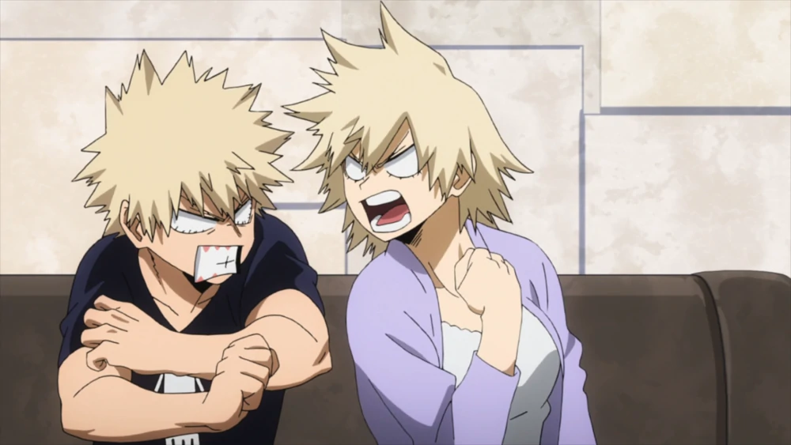

Katsuki Bakugo é um jovem com um corpo extremamente atlético e com uma estatura mediana para a sua idade,
medindo
aproximadamente 172 centímetros. As características físicas mais marcantes de Bakugo são os seus olhos
vermelhos
e seu cabelo loiro, bagunçado e espetado. Katsuki herdou as características físicas citadas
anteriormente de
sua
mãe, Mitsuki e de seu pai, Masaru.

Sua fantasia de herói é composta de uma gola V na cor preta e sem mangas, tendo um X laranja no centro
passando
pela gola e lateral da camiseta. Em seu pescoço existe uma proteção, aparentemente, metálica na qual
possui
três
furos nas laterais. Ele usa uma luva preta por baixo das enormes granadas em seu braço. Seu cinto, que
também
possui granadas, segura suas calças que possuem pesados protetores de joelhos. E por fim possui uma
mascara
nos
olhos que tem uma aparência de explosão.
Katsuki consegue manter suas explosões por tempo suficiente para anular a Muralha de Gelo Gigante de Shouto e mesmo quebrar o endurecimento de Eijiro. Sua explosão mais poderosa (sem usar as braçadeiras de Granada) foi usada para destruir completamente os meteoros de Ochaco, e joga-la para longe com o choque do ar. Explosões não reforçadas de força similar foi usada contra All Might durante o exame prático. Essas explosões, especialmente quando usadas repetidamente, mostrou ter efeito negativo nos braços de Katsuki.
No mangá de My Hero Academia, Bakugo foi um dos principais heróis escolhidos para enfrentar Shigaraki na linha de frente. Bakugo já havia se ferido seriamente, mas manteve-se na luta até receber um golpe fatal que pode ter matado ele. Será que Bakugo realmente morreu ou ele ainda pode ter salvação?
No capítulo 362 de My Hero Academia, o Big Three atacou Shigaraki com tudo que eles tinham, mas, mesmo assim, não foi o suficiente para derrotar o vilão. Depois que Bakugou teve seu braço quebrado, os outros heróis continuaram na luta enquanto ele se recuperava. Entretanto, ele tentou lutar contra Shigaraki novamente e acabou recebendo um golpe direto no coração.